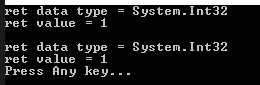
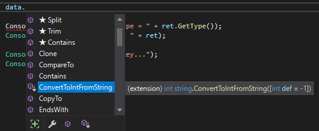

こんにちは。明月です。
この投稿はC#の拡張メソッドを使い方に関する説明です。
以前の投稿でC#のメソッド(関数)を使い方に関して説明したことがあります。
link - [C#] 9. 関数(Method)とオーバーロード、再帰呼び出し
関数というのはクラス内でデータを変更、処理する機能という文法です。
クラスを作成して関数を作って、クラスの外部から呼び出すことに関してはよく知っています。
でも、我々がプロジェクト内で作成したクラスではなく、.Net frameworkで提供するクラスや外部ライブラリから取得するクラスに関して関数を追加したい場合はどうしよう。
using System;
namespace Example
{
class Program
{
//Stringタイプを関数でintタイプに変換する関数
static int ConvertToIntFromString(String val, int def = -1)
{
try
{
// 変換
return Convert.ToInt32(val);
}
catch
{
// エラーが発生すると基本データをリターン(default: -1)
return def;
}
}
// 実行関数
static void Main(string[] args)
{
// stringタイプの値は1
var data = "1";
// stringからintタイプに変換
var ret = ConvertToIntFromString(data);
// ret変数のデータタイプ
Console.WriteLine("ret data type = " + ret.GetType());
// 値をコンソールに出力
Console.WriteLine("ret value = " + ret);
// 任意のキーを押してください
Console.WriteLine("Press Any key...");
Console.ReadLine();
}
}
}
上の例は基本的に関数生成と使う方法に関することです。
でも、もっとしやすくするためにConvertToIntFromString関数がStringクラスの関数みたいに設定したいです。
using System;
namespace Example
{
// 拡張関数を作成するためのstatic class生成
static class ExpendFunction
{
// 基本関数のタイプで始めのパラメータにthisキーワードを入れるとstringクラスの拡張メソッドになる。
//Stringタイプの関数をintタイプに変換する関数
public static int ConvertToIntFromString(this String val, int def = -1)
{
try
{
// 変換
return Convert.ToInt32(val);
}
catch
{
// エラーが発生すると基本データをリターン(default: -1)
return def;
}
}
}
class Program
{
// 実行関数
static void Main(string[] args)
{
// stringタイプの値は1
var data = "1";
// stringからintタイプに変換(拡張関数)
var ret = data.ConvertToIntFromString();
// ret変数のデータタイプ
Console.WriteLine("ret data type = " + ret.GetType());
// 値をコンソールに出力
Console.WriteLine("ret value = " + ret);
// 改行
Console.WriteLine();
// stringからintタイプに変換(一般関数式)
ret = ExpendFunction.ConvertToIntFromString(data);
// ret変数のデータタイプ
Console.WriteLine("ret data type = " + ret.GetType());
// 値をコンソールに出力
Console.WriteLine("ret value = " + ret);
// 任意のキーを押してください
Console.WriteLine("Press Any key...");
Console.ReadLine();
}
}
}

始めの例と差異は拡張関数をstatic classに関数を生成しなければならないです。
staticが付けたらプログラムが起動する時、一括的に読み込みますが、その時に既存のStringクラスに関数を追加する役割をするらしいです。
拡張関数はstaticで生成すること、始めのパラメータにthisを付けて該当のクラスの拡張関数になります。
使用方法はstringでの関数みたいに使えます。

Visual studioのインテリジェンス(自動完成機能)にも関数があるみたいに制御になります。
そして拡張関数で設定しても既存方法みたいに一般関数を呼び出すことにも使うこともできます。
一般プロジェクトで処理機能だけある関数の場合、普通はUtilやCommon、Defineのクラスを作成して管理します。
その方法が悪いことではないですが、このみたいに拡張関数で設定して置いたら可読性やソース整理することにすごく良いと思います。
ここまでC#の拡張メソッドを使い方に関する説明でした。
ご不明なところや間違いところがあればコメントしてください。
- [C#] 43. ストリーム(Stream)とバイナリ(byte[])、エンコード(Encoding)、そしてusingを使い方とIDisposableインターフェース2021/10/04 18:33:04
- [C#] 42. ファイルを扱い(IO)とファイルメタデータ(FileInfo)を使い方2021/10/01 20:10:21
- [C#] 41. Taskクラスとasync、awaitを使い方2021/10/01 18:59:14
- [C#] 40. Linqを利用した並列処理(Parallel)を使い方2020/05/13 17:37:13
- [C#] 39. lockキーワードとdeadlock(デッドロック)2019/07/24 00:57:35
- [C#] 38. ThreadPoolの使い方2019/07/23 00:05:40
- [C#] 37. スレッド(Thread)を使い方、Thread.Sleep関数を使い方2019/07/22 23:45:05
- [C#] 36. 拡張メソッドを使い方2019/07/22 23:30:17
- [C#] 35. 文字列クラス、StringとStringBuilderを使い方2019/07/22 23:15:42
- [C#] 34. 最上位クラス(Object クラス)2019/07/20 02:27:23
- [C#] 33. 匿名形式(Anonymous Types)を使い方2019/07/20 02:22:03
- [C#] 32. ジェネリックタイプ(Generic Type)を使い方2019/07/18 22:50:16
- [C#] 31. アトリビュート(Attribute)を使い方2019/07/18 20:22:16
- [C#] 30. Linq関数式を使う方法2019/07/17 23:06:42
- [C#] 29. Linqクエリ式を使い方2019/07/17 20:57:00
- [C#] 44. ファイル(FileInfo)とディレクトリ(DirectoryInfo)を扱い2021/10/05 19:29:34
- [C#] 43. ストリーム(Stream)とバイナリ(byte[])、エンコード(Encoding)、そしてusingを使い方とIDisposableインターフェース2021/10/04 18:33:04
- [C#] 42. ファイルを扱い(IO)とファイルメタデータ(FileInfo)を使い方2021/10/01 20:10:21
- [C#] 41. Taskクラスとasync、awaitを使い方2021/10/01 18:59:14
- [Javascript ] WebのFull calendar(スケジュールカレンダー)の使い方法2021/07/15 21:35:36
- [Java] 56. Web serviceのサーブレット(Servlet)で初期化作業(properties設定)2021/07/02 17:10:36
- [Java] 55. Spring frameworkに文字化けを解決する方法(Encoding設定)2021/06/30 16:37:16
- [Java] 54. Spring frameworkでWeb filterを使う方法2021/06/29 18:25:12
- [Java] 53. ウェブサービス(Web service)でエラーページを処理する方法2021/06/25 13:35:54
- [Design pattern] 1-3. ファクトリメソッドパターン(Factory method pattern)2021/06/23 19:45:37
- [Java] WebSocketでチャット履歴をローディングする方法2021/06/15 18:34:45
- [Java] WebSocketを利用してユーザ(サイト運用者)が他のユーザとチャットする方法2021/06/15 17:20:08
- [Design pattern] 1-2. ビルダーパターン(Builder pattern)2021/06/11 19:06:28
- [Design pattern] 1-1. シングルトンパターン(Singleton pattern)2021/06/09 19:40:05
- [Design Pattern] デザインパターンの紹介2021/06/08 20:42:36